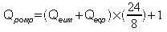
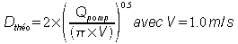
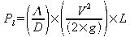
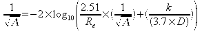
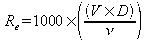
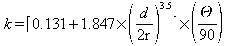

Voir exemple : Les Stations de pompage
Les stations de pompage sont destinées à franchir des obstacles ou à modifier un profil en long devenu économiquement inacceptable en réseau gravitaire.
Suivant les cas on distingue les «stations de relèvement» destinées à élever l’eau localement et les «stations de refoulement» destinées à forcer le transport des effluents sur de grandes distances.
Une station de pompage est constituée d’une bâche de stockage temporaire ou de reprise, il est prévu un trop-plein en cas de panne; une grille est placée en amont, elle permet de limiter les effets abrasifs et d’assurer la pérennité des matériels électromécaniques en retenant les déchets volumineux. Deux groupes électropompes submersibles sont prévus dont un en secours. Une échelle permet d’accéder dans la bâche.
source : ENGEES (Ecole Nationale du Génie de l’Eau et de l’Environnement de Strasbourg)
Les équipements hydrauliques sont confinés dans une chambre additionnelle. Un clapet anti-retour, généralement à boule évite la vidange du circuit hydraulique après l’arrêt des pompes. Une vanne est placée après le clapet, elle permet d’isoler une pompe lors de l’entretien et du démontage. L’anti-bélier permet de protéger l’installation hydraulique.
Il faut aussi prévoir l’alimentation électrique et l’armoire de commande avec voyants extérieurs de l’état de marche.
La commande automatique des groupes de pompage est assurée en fonction du niveau dans la bâche. Il s’agit de démarrer et d’arrêter les pompes à des niveaux déterminés et mesurés par des ultra-sons, des sondes piézo-électriques ou des poires. Un déclenchement électromagnétique de la poire fait démarrer la pompe, les automatismes sont réalisés par des logiques à relais électromagnétiques ou par des automates programmables industriels.
Les roues à vortex sont réservées pour les liquides contenant des solides, des fibres avec des matières épaisses ainsi que des inclusions d’air. Le vortex créé par la roue va pomper le fluide. Cette technique permet une bonne résistance à l’abrasion et un passage libre important évitant l’obstruction de la roue. Cependant le rendement hydraulique de 50 % est faible.
La mise en marche de pompe met en mouvement le fluide déjà présent dans les canalisations, le clapet sous la poussée de l’eau s’ouvre, à l’arrêt des pompes le clapet se referme. Pendant le fonctionnement d’une seule pompe, les autres clapets sont fermés pour éviter un retour de l’eau pompée vers la bâche.
A la mise en marche de la pompe, lorsque l’amplitude des variations de pression du à un changement de régime devient trop importante, l’anti-bélier protège les installations car les coups de bélier peuvent entraîner des ruptures de canalisations ou des phénomènes de cavitation. On retrouve les mêmes phénomènes à l’arrêt de la pompe.
Le dimensionnement d’une station de pompage consiste à déterminer d‘une part le volume de la bâche et d’autre part, pour les stations de refoulement les caractéristiques de la canalisation de refoulement. Par ailleurs pour le choix des caractéristiques des pompes il convient d'estimer la hauteur manométrique totale (HMT) qui se décompose en :
hauteur géométrique (hauteur d'aspiration + hauteur du refoulement)
pertes de charge linéaires
pertes de charge singulières
Les données nécessaires à ces calculs sont de quatre types :
Les données débitmétriques
Les données topographiques et géométriques
Les données singulières
Les données techniques
Nota : des informations plus complètes sur la caractérisation des débits sont disponibles dans l'aide du module bassin versant.
Les stations de pompage sont le plus généralement réalisées sur des réseaux d’évacuation d’eaux usées.
Le module d’Hydrouti est conçu pour répondre essentiellement à ce type de situation ; l’utilisation dans le cadre d’une station de pompage sur des eaux pluviales nécessite donc des adaptations pour la saisie des données débitmétriques.
Le débit de pompage théorique proposé (Qpomp) est estimé à partir du débit moyen des eaux usées (Qeum) et du débit permanent des eaux claires (Qecp)

Le débit de pompage retenu est fixé par le projeteur, il est au minimum égal au débit de pointe de temps sec.
En émettant un hypothèse de vitesse de 1.0 m/s, un diamètre théorique de la canalisation de refoulement est estimé à partir du débit de pompage retenu :

Après choix par le projeteur d’un diamètre commercial, recommandé d’un minimum de 100 mm pour éviter les risques d’obstruction, la vitesse en régime permanent est calculée; cette vitesse doit être supérieure à 0.60 m/s pour éviter les mises en dépôts de matières en suspension, elle doit également ne pas être trop élevée pour limiter les pertes de charge. Une vitesse comprise entre 0.80 et 1.20 m/s est conseillée.
Les données géométriques et topographiques permettent de caractériser la canalisation de refoulement et les différentes cotes caractéristiques du projet. Ces informations permettront de déterminer la hauteur géométrique (Hg) et les pertes de charge linéaires (Pl).
La canalisation de refoulement est caractérisée par sa longueur développée, son diamètre intérieure et son matériau. Les matériaux prédéfinis permettent de caractériser la rugosité de la canalisation qui constitue un facteur du calcul des pertes de charge linéaires.
Les informations topographiques précisent :
au droit du poste de pompage
la cote du terrain naturel (NivTN)
la cote du fil d'eau de la canalisation arrivée (NivEn)
la cote du fil d'eau de départ de la canalisation de refoulement (NivDep)
à l'extrémité du refoulement
la cote du fil d'eau d’arrivée de la canalisation de refoulement (NivEx)
La hauteur manométrique totale est égale à la somme de la hauteur géométrique totale (Hg+Ha) et de la perte de charge totale (Pc) constituée par la somme des pertes de charge linéaires (Pl) et des pertes de charge singulières (Ps).
Soit : HMT = Ha + Hg + Pc
Les pertes de charge linéaires dans la canalisation de refoulement est donné par la formule générale suivante :

avec :
Λ : coefficient de pertes de charge (sans dimension)
D : diamètre de la canalisation (en m)
V : vitesse de l'écoulement (en m/s)
g : accélération de la pesanteur (en m/s2)
L : longueur développée de la canalisation de refoulement (en m)
Le coefficient de perte de charge (L) est indépendant de l'état de surface si le régime d'écoulement est laminaire, si le régime d’écoulement est turbulent (cas de la canalisation de refoulement), le coefficient de pertes de charge est déterminé à l'aide de la formule de COLEBROOK :
|
 |
 |
|
avec : Λ : coefficient de perte de charge (sans dimension) Re : nombre de Reynolds D : diamètre de la canalisation (en m) k : indice de rugosité de la canalisation (en mm) |
avec : Re : nombre de Reynolds D : diamètre de la canalisation (en mm) V : vitesse de l'écoulement (en m/s) ν : viscosité cinématique de l'eau (en mm2/s) |
|
Nature de la canalisation |
Indice rugosité k en mm |
|
FONTE |
0.1 |
|
PEHD |
0.018 |
|
PVC |
0.018 |
|
ACIER |
0.275 |
Les singularités :
- Coudes arrondis

avec
d : diamètre de la conduite en m
r : rayon de courbure du coude en m
Θ : déviation en degré
- Autres singularités
|
Vannes |
Dispositif de vidange |
Ventouse |
Clapet Antiretour |
Antibélier |
|---|---|---|---|---|
|
k = 0.12 |
k=0.04 |
k=0.04 |
k=2 |
K=0.044 |
![[Avertissement]](chmicons/warning.png) | Avertissement |
|---|---|
PAR DEFAUT LES PERTES DE CHARGE DES SINGULARITES INTERNES AU POSTE DE POMPAGE SONT AUTOMATIQUEMENT INTEGREES AU CALCUL. EN CONSEQUENCE LES SINGULARITES A DEFINIR SONT CELLES QUI CONCERNENT UNIQUEMENT LA CANALISATION DE REFOULEMENT. |
Coefficient des pertes de charge des singularités internes intégrées
|
Type de l'élément |
Coefficient de perte de charge (k) |
|
1 pied d'assise |
0.30 |
|
2 coudes à 90 |
2 x 0.29 = 0.58 |
|
1 clapet antiretour |
2 |
|
1 vanne |
0.12 |
|
1 sortie |
1 |
|
1 connexion en T |
0.50 |
Le choc hydraulique ou coup de bélier est dû à l'accélération ou la décélération rapide d'un liquide dans une canalisation, provenant le plus souvent d'un changement brusque de régime (arrêt d'une pompe, fermeture rapide d'un robinet, vanne, etc..).
Les principaux facteurs qui interviennent sont : longueur de la canalisation en amont de l'appareil, vitesse du liquide dans la canalisation avant le changement de régime, densité du liquide, élasticité de la canalisation et du liquide, durée de fermeture de l'appareil.
L'onde de choc parcourt, à partir de son origine, le trajet aller et retour de la canalisation avec une force et une vitesse décroissante et une fréquence régulière, jusqu'à son élimination par frottement et inertie.
Par leur puissance et leur fréquence, les coups de bélier engendrés dans les canalisations fatiguent les tuyauteries, les raccords, les brides, détériorent les supports, les joints et les divers appareils rencontrés sur le parcours. Ils les déforment et provoquent des fuites, des bruits et vibrations et souvent des éclatements.
Formation de l'onde de choc
Ce problème peut être résolu avec la mise en place d'un antibélier (cheminée d'équilibre, réservoirs d'air). Les antibéliers agissent comme chambre de détente et transforment en travail l'énergie excédentaire pendant le changement de régime. Ils apportent une solution efficaces aux problèmes difficiles posés par la suppression des coups de bélier.
Absorption par antibélier
La détermination de la capacité d'un antibélier est complexe.
Hydrouti ne dimensionne pas le système antibélier mais informe le projeteur de sa nécessité lorsque la hauteur manométrique totale dépasse 8 m.
Ces données permettent de préciser les principales caractéristiques dimensionnelles de la station de pompage et ses conditions de fonctionnement.
Le projeteur doit notamment préciser :
le nombre de pompe pouvant fonctionner en alternance (en général 2)
le nombre de démarrage par heure il est conseillé de respecter :
15 démarrages par heure pour des moteurs de 0.5 à 4 kW
12 démarrage par heure pour moteurs de 5 à 12 kW
10 démarrage par heure pour moteurs de 6 à 30 kW
6 démarrage par heure pour moteurs au dessus de 30 kW
le type et la dimension de la bâche de pompage
la garde à l'égout qui représente la hauteur entre le niveau d'arrivée des eaux dans le poste et le niveau d'eau de démarrage du pompage. Il est recommandé une hauteur de 0.10 à 0.20 m
la garde au fond qui représente la tranche d'eau morte